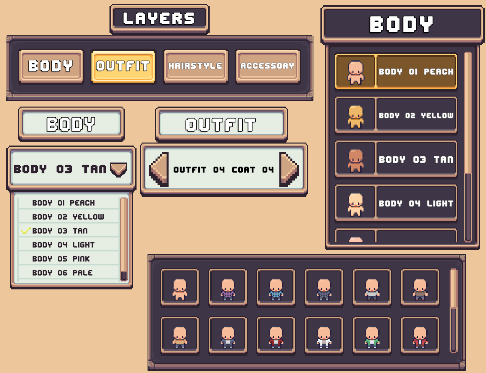
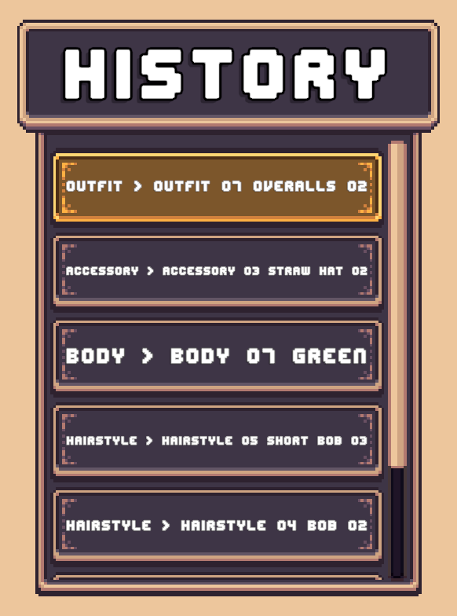
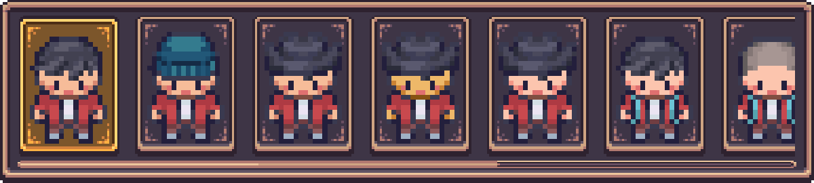

Character Creator
The Character Creator is a modular prefab based framework for building Character Creation Menus.
A Character Creation Menu is a menu that lets your players design their own characters for use later in your game. These menus could be used to create a player character, or customize the look of other NPCs.
It's fully customizable; combine and edit different prefabs to create the exact design you want.
Character Creator Modules
The Character Creator is modular, it's split into a bunch of smaller pieces each with a simple task. When these pieces are put together they form a complete and functioning Character Creation Menu.
| Module | Description |
|---|---|
| Layer Selectors | Changes the visual elements of each layer of the character. |
| Character Preview | Displays an animated or static preview of the character that live updates when changes are made. |
| Menu Controls | Essential controls for the menu such as Save, Back and Reset buttons. |
| Character History | History panels with options to revert to previous versions of the character. |
| Randomization Controls | Simple randomization buttons & advanced randomization buttons with options to randomize specific layers. |
| Loading Screens | Backgrounds with animated elements that had the menu while it's loading. |
Layer Selectors
A Layer Selector is any UI element that lets the player change a specific layer of a Layered Character.
The following selector types are included.
| Selector Type | Description |
|---|---|
| Dropdown Selector | Simple dropdown listing all options for a layer. |
| Carousel Selector | Displays the current option with arrows to cycle left/right through other layer options. |
| Grid Selector | A grid of preview thumbnails for each layer option. |
| List Selector | A vertical or horizontal list of options (optionally with preview images). |
| Tab Selector | Works alongside another selector. Clicking a tab switches which layer the other selector controls. |

Read More → Layer Selector Setup
Character Preview
The Character Preview shows the character currently being customized. Options include:
- Static Sprite Preview – Displays the
preview spritedefined in the Character Type. - Animated Preview – Uses an Animator Controller to play character animations.
- Animation Swapping – With animated previews, extra animations can be defined in the Character Type. buttons can be auto created for swapping between them.
- Rotate Character – Add rotation buttons to view the character from different sides.
Menu Controls
Necessary controls for every Character Creation Menu along with some additional niceties. These controls include:
- Back/Close menu button
- Save changes button
- Reset character button
- Simple Randomization button
Character History
Changes made to the character can be recorded using the CCM History Tracker component.
Each time a layer is modified, a snapshot is stored.
The component contains the following settings:
- Snapshot Limit – Configurable between 1–100 (default: 30).
- Preserve First Snapshot – Optionally prevent the first snapshot from being overwritten when the limit is reached.

Read More → History Tracking System
Undo & Redo
Use the CCM Timeline Button Handler component on a button to undo or redo changes on the History Tracker component.

History Panels
A History Panel displays the list of snapshots recorded in the History Tracker. Players can click an entry to revert back to that version of the character.
| Panel Type | Description |
|---|---|
| Text Based | Each entry contains text describing what was changed (often in a vertical list). |
| Sprite Based | Each entry shows a snapshot preview image (often in a horizontal list). |
| Hybrid | Show both text and preview images in each entry. |


Randomization Controls
Character randomization functionality can be added in multiple differents ways
- Randomize Button - A simple Randomize button which randomizes all layers of the character.
- Controlled Randomization - A randomize button with additional options to select which layers to randomize.
- Layer Specific Randomization - Randomization buttons included in Layer Selectors.
Read More → Character Randomization
Loading Screens
Loading screens hide the Character Creation Menu while it's being setup. They're modular just like the rest of the menu. Elements such as a loading bar or progress text can be easily added or removed to customize the loading screen.
Other Features
- Mid-Play Editing – Characters already in use can be edited in the Character Creator. Changes apply immediately after saving.
- Optional Display Name – Add a name field so players can assign a display name to their character.